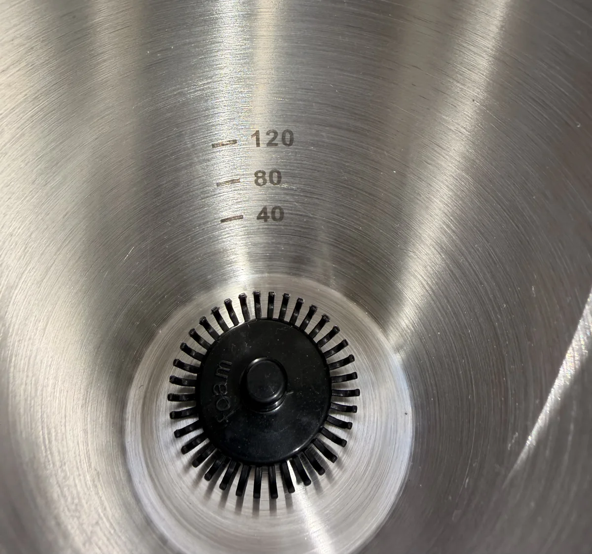

Saved settings
Keep your preferred cycles ready at the touch of a button.
The hands-free matcha mixer with a two-stage automatic cycle, fast to incorporate, slow to refine.
Two movements. Each with a purpose.
A fast vortex draws sifted matcha through the water, bringing the preparation together evenly.
The cycle changes pace to smooth the texture and reduce larger surface bubbles.
Fast to incorporate. Slow to refine.
Add water to the mixing cup.
Measure your matcha and sift it directly over the water.
Choose your setting to begin the Sous Cycle™.
Serve it straight, over ice or as the base for your finished drink.
Save the settings you use most, or adjust the cycle whenever you want something different.
Keep your preferred cycles ready at the touch of a button.
Adjust the movement for your matcha and the texture you prefer.
Measure water directly in the mixing cup using the optional etched markings.

Matcha Sous began behind the café bar. I could never get that silky microfoam on my own, not reliably, and never in a hurry, and making the same drink again and again made the variable impossible to ignore: the mixing.
We designed Sous to support that one step. You still choose the tea, measure the water and define the finished drink. Sous brings them together and refines the texture, hands-free.

Matcha Sous
A hands-free matcha mixer, designed to earn a permanent spot on your counter.
What’s included
Payment is collected when you reserve. Cancel any time before it ships, for a full refund.
This sits on the counter like it belongs there, doing the one step that’s hardest to get right, twice a day, every day. The tea is still yours to choose.
A Sous in service of the ritual.